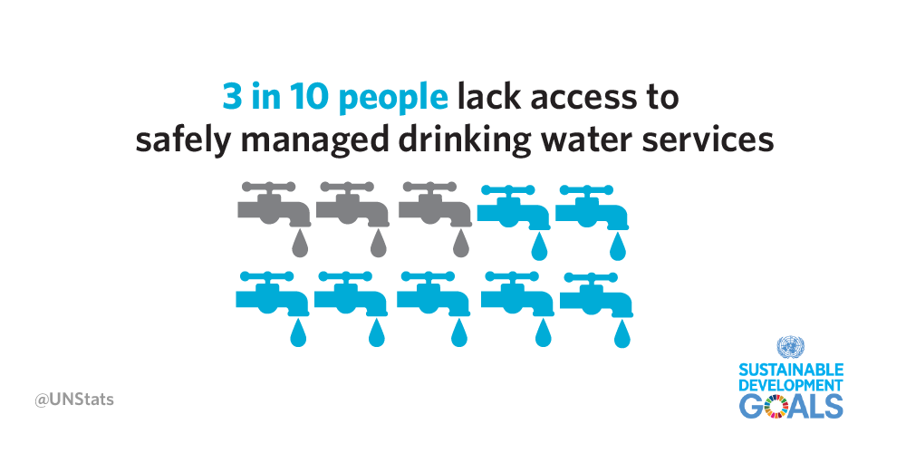
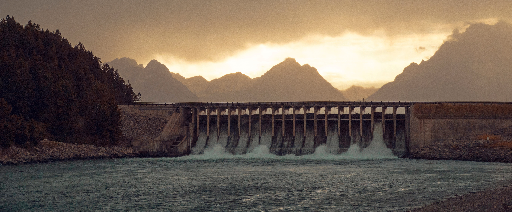

The KLEAN filtration system (KFS) is our contribution to the sixth sustainable development goal from UN – clean and sanitary water for all.
A small idea - a huge project.
It all started with a school assignment, but eventually evolved into something much more meaningful. We at KLEAN saw an opportunity in cleaning large quantities of water with a – on paper – simple solution. Of course, it wouldn’t turn out to be so simple, but we wanted to do go through with it regardless. Above you can see our motivation for this filter. The image is taken from UN’s own pages and shows there is still a vast amount of people without a proper source of clean water.
To put our idea into words – it has the same function as a dam, but instead of being huge and keeping the water at bay, it filters and cleans it instead. The provided image below is just a mockup of the product. It will not be nearly as large and difficult to build and won’t be very expensive over the course of its lifecycle, which is calculated to be around 60-100 years.
Give us feedback and help us improve!
Join us on our journey to help the people in need get their clean water. We want you to help us help you. Feel free to reach out to us and tell us something inspiring, or something else. We appreciate all the feedback we get.
You can find more information about the filter on the next page.